Code
import numpy as np
import scipy.integrate
import scipy.optimize
import matplotlib.pyplot as plt
from mpl_toolkits.mplot3d import Axes3D
%matplotlib inline
figsize=(6, 4.5)This chapter discusses results from these references:
import numpy as np
import scipy.integrate
import scipy.optimize
import matplotlib.pyplot as plt
from mpl_toolkits.mplot3d import Axes3D
%matplotlib inline
figsize=(6, 4.5)Today we will talk about how to build a clock in a living cell. More specifically, we will discuss a synthetic genetic clock circuit called the Repressilator (Elowitz & Leibler, Nature, 2000). We first discuss the important roles of oscillators and clocks in natural biological systems, and then ask how one might go about designing a synthetic clock circuit that can operate in a living cell. To do this, we will use linear stability analysis, a broadly useful approach for analyzing diverse systems. We will also introduce the concept of a limit cycle, which is an additional, and more dynamic, type of “attractor” compared to the fixed points that we have encountered so far.
Modern life depends on accurate time-keeping, which has been enabled by relentless invention and improvement of mechanical and electronic clocks. For example, one of the major turning points in global navigation was the development of mechanical, temperature-compensated clocks to address the challenge of measuring longitude at sea. Notably, John Harrison engineered an amazing and beautiful series of clocks, or “marine chronometers,” of increasing precision for this purpose. Fast forward to today, and we find our daily navigation through the mean streets of Los Angeles, across smaller distances and usually at far slower speeds depends on the even more precise atomic clocks that operate on satellites to enable the global positioning system (GPS).
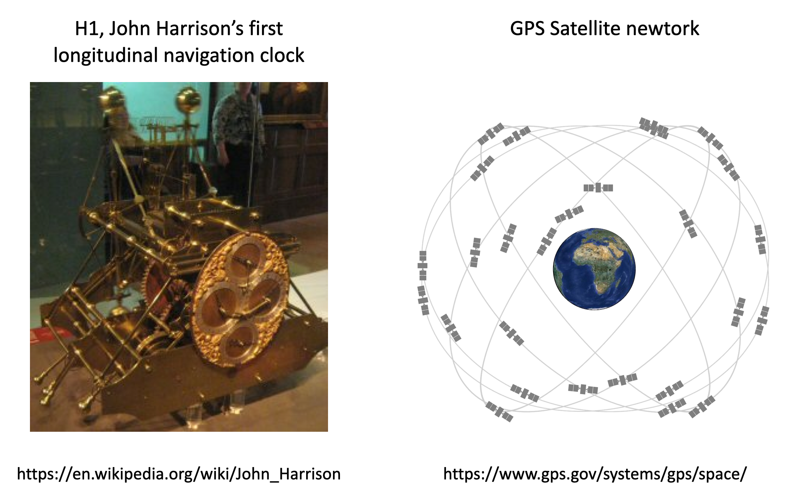
Meanwhile, as living organisms, we are controlled by clocks of many kinds. Circadian clocks control our 24 hour cycles of sleep, hunger, and activity. Humans confined to environments in constant conditions exhibit free running activity cycles with 24hr (or, more accurately, a 24.18 hour periods). Our clocks do not just respond to light and temperature cycles, but constitute free-running clocks that adjust all too slowly to external inputs as we fly across time zones.
The cell cycle represents another kind of oscillator that takes cells through repetitive cycles of growth and division. Hormones cycle on a range of timescales from hours to weeks. Plants contain circadian and seasonal clocks that control their movement and flowering, in response to time as well as light, temperature and other inputs.
Can we understand how these biological clocks work? In 1971, Ronald Konopka and Seymour Benzer identified mutations that altered the circadian behavioral rhythms of fruit flies. Over the last few decades, biologists have discovered key molecular components that enable these clocks to function. These include transcription factors, light sensors, and other components. In multicellular organisms, clocks synchronize between cells and organs. However, clocks are not a multicellular phenomenon: Even single cell cyanobacteria have precise, cell-autonomous circadian clocks. And analysis of oscillations in individual mammalian cells indicates that they can still exhibit circadian oscillations, as one can see in this movie and time traces of individual fibroblasts, showing robust cycling as well as cell-cell variability in period and phase, from D. Welsh, et al. (Current Biology 2004).
Based on the movie, we can look at time courses of singe cell oscillations.
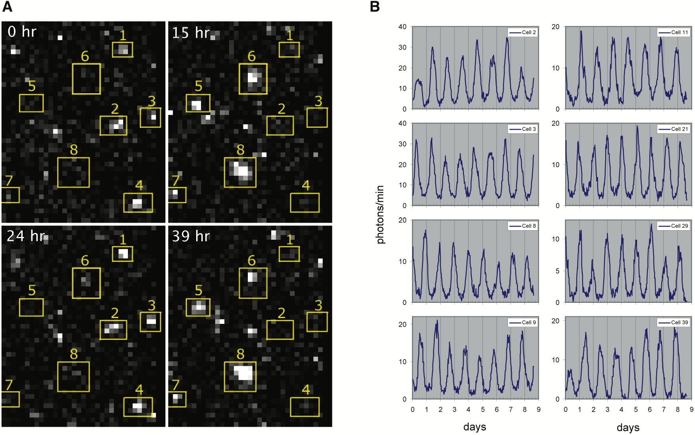
Efforts from many labs have now identified many key biological components and interactions that generate circadian rhythms, culminating in the 2017 Nobel prize to Jeffrey C. Hall, Michael Rosbash and Michael W. Young “for their discoveries about how internal clocks and biological rhythms govern human life.” One of the simplest clocks exists in cyanobacteria, where Kondo and colleagues showed in 2005 that three proteins plus ATP could, remarkably, biochemically reconstitute core clock oscillations in vitro through a circuit mechanism subsequently explained by Rust, et al. involving ordered phosphorylation and feedback.
Here we will ask a very simple question: What kind of biological circuit is sufficient to generate a clock that operates reliably in a single cell. Designing and building a clock “from scratch” is a synthetic biology approach that helps us identify the fundamental design principles underlying clock design, and address questions such as:
In addition, synthetic clocks provide modules for engineering more complex cellular behaviors.
Previously in this course, we have discussed only one kind of “attractor” – the stable fixed point. When a system sits at a stable fixed point, it does not change over time. By contrast, in a functioning clock circuit, the state of the system constantly changes in a periodic fashion, progressing through a cyclic sequence of “phases” that returns it to its starting point without external input. For an ideal clock, perturbations that we might expect to occur in a cell, such as fluctuations in the abundance of cellular components, should generate minimal perturbations to the clock dynamics, which should ultimately return to the same cycle.
In other words, we want to design a system that “has to” oscillate, that cannot do anything else.
The kind of behavior we are looking for is called a limit cycle. Stable limit cycles are defined by Strogatz as “isolated closed orbits”, meaning that the system goes around the limit cycle, and that neighboring points ultimately feed into the limit cycle. If the system is on a limit cycle, then it will ultimately return to the limit cycle after small perturbations, as sketched here:

Note that one can also have unstable limit cycles. Also, as Strogatz notes, linear systems such as a frictionless pendulum can produce a family of orbits but not a limit cycle, because multiplying any solution of \(\dot{\mathbf{x}}=\mathsf{A} \cdot \mathbf{x}\) by a constant produces another solution.
Our first design requirement for the synthetic clock is that it should produce limit cycle oscillations.
In addition to generating limit cycle oscillations, our clock circuit should also oscillate across a broad range of biochemical parameter values. This is because we may not be able to exactly know or control many cellular parameters, which can and do fluctuate, as we will discuss in the context of stochastic “noise.”
In synthetic biology, we do not have the level of understanding or control that is available to evolution. We know a good deal about some kinds of components, and much less about many others. Among the best characterized regulatory components in biology are prokaryotic (bacterial) transcriptional repressors and their cognate target promoters. These components are also modular and composable. By modular, we mean that they can be taken out of their natural context and used to generate a new regulatory circuit. Composability is a stronger form of modularity in which a set of components can regulate each other in the same way. For instance, transcription factors are composable because any one can be engineered to regulate any other simply by combining corresponding target promoter sequences with open reading frames for the transcription factors.
(Transcriptional activators, which we have already encountered, are also excellent components for synthetic design although, at the time this work was done, there were generally fewer examples that were as well-understood as repressors. Therefore, we will focus below on a circuit design built exclusively from repressors).
Based on the considerations above, we will try to design a biological circuit that generates limit cycle oscillations across a broad range of biochemical parameter values using the well-characterized composable transcriptional repressors.
One of the first designs one can imagine building with repressors is a “rock-scissors-paper” feedback loop composed of three repressors, each of which represses the next one, in a cycle:
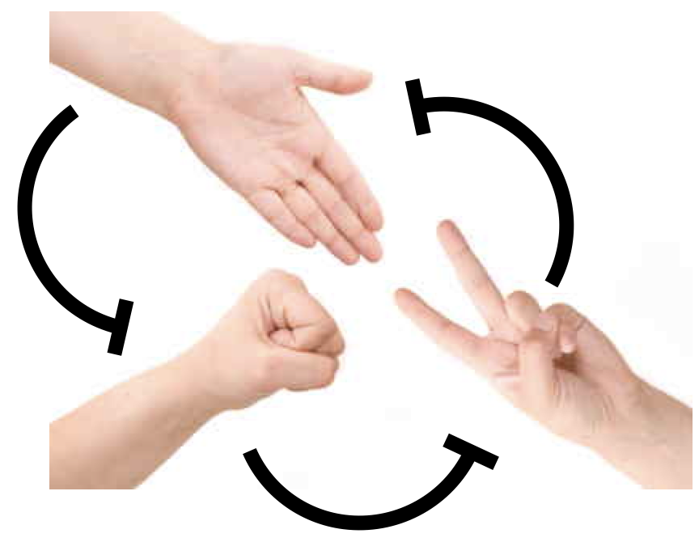

This diagram refers to three specific repressors, TetR, λ cI, and LacI. We will discuss the rationale for choosing these below, after we work out the design. For now, the names of the repressors are unimportant, so we will call them repressor 1, 2, and 3. Repressor 1 represses production of repressor 2, which in turn represses production of repressor 3. Finally, repressor 3 represses production or repressor 1, completing the loop.
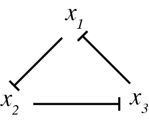
This design is a three-component negative feedback loop (analogous to a “three ring oscillator” in electronics). If one were to turn up the level of the first protein in this system, it would lead to a decrease in the second, which would cause an increase in the third, and finally a decrease in the first. Thus, one can see, intuitively, that this system produces a negative feedback that tends to push back in the opposite direction to any perturbation, after the delay required to propagate the perturbation around the loop.
We can try to work out the dynamics of this system by intuitive reasoning. We might achieve a limit cycle oscillation: Say that initially repressor 1 has high copy number and repressors 2 and 3 are low. The high copy of number of repressor 1 will keep the numbers of repressor 2 down. This means that repressor 3 is free to be expressed. As its copy number grows, it will start to repress repressor 1. As repressor 1 goes down, repressor 2 is expressed in higher numbers. The increased repressor 2 copy number leads to less repressor 3. Then, repressor 1 comes back up again. So, we see a cycle, where repressor 1 is high, then repressor 3, and finally repressor 2.
However, this behavior is by no means guaranteed. We might equally well just get a stable steady state, where all three repressors evolve to intermediate values, each sufficient to keep its target repressor at the appropriate level to maintain its target at its steady-state level. This behavior would be much more boring.
In fact, both behaviors are possible.
So, our questions are now:
To analyze the repressilator, we will write down our usual differential equations. For simplicity, we will assume symmetry among the species (this will not be true in the real system) and, initially, we will consider only protein dynamics, ignoring mRNA. Later on, we will ask how including mRNA modifies the conclusions.
\[\begin{align} \frac{\mathrm{d}x_1}{\mathrm{d}t} &= \frac{\beta}{1 + (x_3/k)^n} - \gamma x_1, \\[1em] \frac{\mathrm{d}x_2}{\mathrm{d}t} &= \frac{\beta}{1 + (x_1/k)^n} - \gamma x_2, \\[1em] \frac{\mathrm{d}x_3}{\mathrm{d}t} &= \frac{\beta}{1 + (x_2/k)^n} - \gamma x_3. \end{align}\]
In dimensionless units, this is
\[\begin{align} \frac{\mathrm{d}x_i}{\mathrm{d}t} &= \frac{\beta}{1 + x_j^n} - x_i, \quad \text{ for } (i,j) \in \{(1,3), (2,1), (3,2)\}. \end{align}\]
To find the fixed point of the repressilator, we solve for \(x_i\) with \(\dot{x}_i = 0\). We get that
\[\begin{align} x_1 &= \frac{\beta}{1+x_3^n}, \\[1em] x_2 &= \frac{\beta}{1+x_1^n}, \\[1em] x_3 &= \frac{\beta}{1+x_2^n}. \end{align}\]
We can substitute the expression for \(x_3\) into that for \(x_1\) to get
\[\begin{align} x_1 = \frac{\beta}{1 + \left(\displaystyle{\frac{\beta}{1 + x_2^n}}\right)^n}. \end{align}\]
We can then substitute the expression for for \(x_2\) to get
\[\begin{align} x_1 = \frac{\beta}{1 + \displaystyle{\left(\frac{\beta}{1 + \left(\displaystyle{\frac{\beta}{1+x_1^n}}\right)^n}\right)^n}}. \end{align}\]
This looks like a gnarly expression, but we can write it conveniently as a composition of functions. Specifically,
\[\begin{align} x_1 = f(f(f(x_1))) \equiv f\!f\!f(x_1), \end{align}\]
where \[\begin{align} f(x) = \frac{\beta}{1+x^n}. \end{align}\]
By symmetry, this relation holds for repressors 2 and 3 as well, so we have
\[\begin{align} x_i = f\!f\!f(x_i). \end{align}\]
Writing the relationship for the fixed point with a composition of functions is useful because we can compute the derivatives of the composite function using the chain rule.
\[\begin{align} (f\!f\,)'(x) &= f'(f(x))\cdot f'(x), \\[1em] (f\!f\!f\,)'(x) &= f'(f\!f(x)) \cdot (f\!f\,)'(x) = f'(f(f(x))) \cdot f'(f(x)) \cdot f'(x). \end{align}\]
Now, since \(f(x)\) is monotonically decreasing, \(f'(x) < 0\), which implies \(f'(f(x)) < 0\). This means that \(f\!f'(x) > 0\), so \(f\!f(x)\) is monotonically increasing. Now, we already established \(f'(f\!f(x)) < 0\). Since \(x_i\) is increasing, there is at most one fixed point with \(x = f\!f\!f(x)\). This is more clear if we look at a plot.
# Parameters
beta, n = 3, 2
# f(x)
f = lambda x: beta / (1 + x ** n)
# Make composition of functions
x = np.linspace(0, 3, 200)
fff = f(f(f(x)))
plt.figure(figsize=figsize)
plt.xlabel('$x$')
plt.plot(x, x, label="x")
plt.plot(x, fff, color="orange", label="fff(x)")
plt.legend()
plt.show()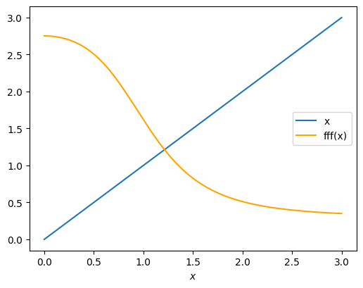
Because the time derivative of \(x_1\), \(x_2\) and \(x_3\) all vanish at the fixed point, and we have shown that the fixed point is unique, we have
\[\begin{align} x_1 = x_2 = x_3 \equiv x_0 = \frac{\beta}{1 + x_0^n}, \end{align}\]
or
\[\begin{align} \beta = x_0(1+x_0^n). \end{align}\]
Because we have a single fixed point, we cannot have multistability in the repressilator. So what happens at this fixed point? To answer this question, we turn to linear stability analysis.
We first give a minimal introduction to the technique of linear stability analysis. The basic idea is that to approximate a nonlinear dynamical system by its Taylor series to first order near the fixed point and then look at the behavior of the simpler linear system. The Hartman-Grobman theorem (which we will not derive here) ensures that the linearized system faithfully represents the phase portrait of the full nonlinear system near the fixed point.
Say we have a dynamical system with variables \(\mathbf{u}\) with
\[\begin{align} \frac{\mathrm{d}\mathbf{u}}{\mathrm{d}t} = \mathbf{f}(\mathbf{u}), \end{align}\]
where \(\mathbf{f}(\mathbf{u})\) is a vector-valued function, i.e.,
\[\begin{align} \mathbf{f}(\mathbf{u}) = (f_1(u_1, u_2, \ldots), f_2(u_1, u_2, \ldots), \ldots). \end{align}\]
Say that we have a fixed point \(\mathbf{u}_0\). Then, linear stability analysis proceeds with the following steps.
1. Linearize about \(\mathbf{u}_0\), defining \(\delta\mathbf{u} = \mathbf{u} - \mathbf{u}_0\). To do this, expand \(f(\mathbf{u})\) in a Taylor series about \(\mathbf{u}_0\) to first order.
\[\begin{align} \mathbf{f}(\mathbf{u}) = \mathbf{f}(\mathbf{u}_0) + \nabla \mathbf{f}(\mathbf{u}_0)\cdot \delta\mathbf{u} + \cdots, \end{align}\]
where \(\nabla \mathbf{f}(\mathbf{u}_0) \equiv \mathsf{A}\) is the Jacobi matrix,
\[\begin{align} \nabla \mathbf{f}(\mathbf{u}_0) \equiv \mathsf{A} = \left.\begin{pmatrix} \frac{\partial f_1}{\partial u_1} & \frac{\partial f_1}{\partial u_2} & \cdots \\[0.5em] \frac{\partial f_2}{\partial u_1} & \frac{\partial f_2}{\partial u_2} & \cdots \\ \vdots & \vdots & \ddots \end{pmatrix}\right|_{\mathbf{u}_0}. \end{align}\]
Thus, we have
\[\begin{align} \frac{\mathrm{d}\mathbf{u}}{\mathrm{d}t} = \frac{\mathrm{d}\mathbf{u}_0}{\mathrm{d}t} + \frac{\mathrm{d}\delta\mathbf{u}}{\mathrm{d}t} = \mathbf{f}(\mathbf{u}_0) + \mathsf{A} \cdot \delta\mathbf{u} + \text{higher order terms}. \end{align}\]
Since
\[\begin{align} \frac{\mathrm{d}\mathbf{u}_0}{\mathrm{d}t} = \mathbf{f}(\mathbf{u}_0) = 0, \end{align}\]
we have, to linear order,
\[\begin{align} \frac{\mathrm{d}\delta\mathbf{u}}{\mathrm{d}t} \approx \mathsf{A} \cdot \delta\mathbf{u}. \end{align}\]
This is now a system of linear ordinary differential equations. If this were a one-dimensional system, the solution would be an exponential \(\delta u \propto \mathrm{e}^{\lambda u}\). In the multidimensional case, the growth rate \(\lambda\) is replaced by a set of eigenvalues of \(\mathsf{A}\) that represent the growth rates in different directions, given by the eigenvectors of \(\mathsf{A}\)
2. Compute the eigenvalues \(\lambda\) of \(\mathsf{A}\).
3. Determine the stability of the fixed point using the following rules.
So, if we can assess the dynamics of the linearized system near the fixed point, we can get an idea what is happening with the full system.
To do the linearization, we need to do Taylor expansions of Hill functions. We do this so often in this course, that we will write them here and/or memorize for future use.
\[\begin{align} \frac{x^n}{1+x^n} &= \frac{x_0^n}{1+x_0^n} + \frac{n x_0^{n-1}}{(1+x_0^n)^2}\,\delta x + \text{higher order terms}, \\[1em] \frac{1}{1+x^n} &= \frac{1}{1+x_0^n} - \frac{n x_0^{n-1}}{(1+x_0^n)^2}\,\delta x + \text{higher order terms}. \end{align}\]
In the following we only need the second, repressing case.
To perform linear stability analysis for the repressilator, we begin by writing the linearized system.
\[\begin{align} \frac{\mathrm{d}\delta x_1}{\mathrm{d}t} &\approx -\frac{\beta n x_0^{n-1}}{(1+x_0^n)^2}\,\delta x_3 - \delta x_1, \\[1em] \frac{\mathrm{d}\delta x_2}{\mathrm{d}t} &\approx -\frac{\beta n x_0^{n-1}}{(1+x_0^n)^2}\,\delta x_1 - \delta x_2, \\[1em] \frac{\mathrm{d}\delta x_3}{\mathrm{d}t} &\approx -\frac{\beta n x_0^{n-1}}{(1+x_0^n)^2}\,\delta x_2 - \delta x_3. \end{align}\]
Defining
\[\begin{align} a = \frac{\beta n x_0^{n-1}}{(1+x_0^n)^2}, \end{align}\]
we can write this in matrix form as
\[\begin{align} \frac{\mathrm{d}}{\mathrm{d}t}\begin{pmatrix} \delta x_1 \\ \delta x_2 \\ \delta x_3 \end{pmatrix} = \mathsf{A}\cdot\begin{pmatrix} \delta x_1 \\ \delta x_2 \\ \delta x_3 \end{pmatrix}, \end{align}\]
with
\[\begin{align} \mathsf{A} = -\begin{pmatrix} 1 & 0 & a \\ a & 1 & 0 \\ 0 & a & 1 \end{pmatrix}. \end{align}\]
To compute the eigenvalues of \(\mathsf{A}\), we compute the characteristic polynomial using cofactors,
\[\begin{align} (1+\lambda)(1+\lambda)^2 + a(a^2) = (1+\lambda)^3 + a^3 = 0. \end{align}\]
This is solved to give
\[\begin{align} \lambda = -1 + a \sqrt[3]{-1}. \end{align}\]
Recalling that there are three cube roots of \(-1\), we get our three eigenvalues.
\[\begin{align} &\lambda = -1 - a, \\[1em] &\lambda = -1 + \frac{a}{2}(1 + i\sqrt{3}),\\[1em] &\lambda = -1 + \frac{a}{2}(1-i\sqrt{3}). \end{align}\]
The first eigenvalue is always real and negative. The second two have a positive real part if \(a > 2\);
\[\begin{align} a = \frac{\beta n x_0^{n-1}}{(1 + x_0^n)^2} > 2. \end{align}\]
Now, we previously derived that the fixed point \(x_0\) satisfies
\[\begin{align} \beta = x_0(1+x_0^n), \end{align}\]
so
\[\begin{align} a = \frac{\beta n x_0^{n-1}}{(1 + x_0^n)^2} = \frac{n x_0^n}{1 + x_0^n}. \end{align}\]
So, \(a>2\) only if \(n > 2\), meaning that we must have ultrasensitivity for the fixed point to be unstable.
At the bifurcation,
\[\begin{align} a = \frac{n x_0^n}{1+x_0^n} = 2, \end{align}\]
so
\[\begin{align} x_0^n = \frac{2}{n-2}. \end{align}\]
Again using \(\beta = x_0(1+x_0^n)\), we can write
\[\begin{align} \beta = \frac{n}{2}\left(\frac{n}{2} - 1\right)^{-\frac{n+1}{n}} \end{align}\]
at the bifurcation. So, for \(n > 2\) and
\[\begin{align} \beta > \frac{n}{2}\left(\frac{n}{2} - 1\right)^{-\frac{n+1}{n}}, \end{align}\]
we have imaginary eigenvalues with positive real parts. This is therefore an oscillatory instability.
We have shown that there is a single fixed point, \(x_1 = x_2 = x_3 \equiv x_0\) with
\[\begin{align} \beta = x_0(1 + x_0^n). \end{align}\]
Getting an analytical solution of this equation for \(x_0\) is usually impossible. We therefore seek a numerical method for finding \(x_0\). This is an example of a root finding problem. It can be cast into a problem of finding \(f(x) = 0\) for some function \(f(x)\). Do not confuse this \(f(x)\) with that defined in the previous sections to define the right hand side of the dynamical equations; we are using \(f(x)\) here to be an arbitrary function. In the present case, \(f(x) = \beta - x_0(1+x_0^n)\).
There are many algorithms for finding roots of functions. We will explore algorithms for doing so for the more general multidimensional case in future lessons. For now, we seek a scalar \(x_0\). In this case, we know a lot about the fixed point. We know that it exists and is unique. We also know that it lies between \(x_0 = 0\) (where \(f(0) = \beta > 0\)) and \(x_0 = \beta\) (since \(f(\beta) < 0\)). When we have bounds and guarantees of uniqueness for a scalar root, we can use a bisection method to find the root. The benefit of the bisection method is that it is guaranteed to find the root of the function \(f(x)\) on an interval \([a,b]\), provided \(f(x)\) is continuous and \(f(a)\) and \(f(b)\) have opposite sign, which is the case here. Brent’s method also has this guarantee, but is more efficient that using bisection. Brent’s method is available in the scipy.optimize.brentq() function. It takes as an argument the function \(f(x)\) whose root is to be found, and the left and right bounds for the root. We can write a function to find the fixed point for given \(\beta\) and \(n\).
def fixed_point(beta, n):
return scipy.optimize.brentq(lambda x: beta - x*(1+x**n), 0, beta)We can use this equation to map out the fixed point for various values of \(\beta\) for given \(n\).
beta = np.linspace(0.1, 100, 200)
colors = ["lightsteelblue", "cornflowerblue", "royalblue"]
plt.figure(figsize=figsize)
plt.xlabel("β")
plt.ylabel("fixed point, x₀")
for n, color in zip([2, 4, 8], colors):
plt.plot(beta, [fixed_point(b, n) for b in beta], color=color, label=f"n={n}")
plt.legend()
plt.show()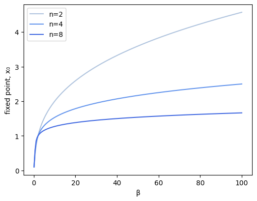
We can integrate the dynamical equations to see the levels of the respective proteins using interactive plotting of the result so we can see how the dynamics depend on the parameters \(\beta\) and \(n\). For sufficiently large \(\beta\) and \(n\), given by the linear stability relation we derived above,
\[\begin{align} \beta > \frac{n}{2}\left(\frac{n}{2} - 1\right)^{-\frac{n+1}{n}}, \end{align}\]
we see oscillations. A few things to notice:
def repressilator_rhs(x, t, beta, n):
"""
Returns 3-array of (dx_1/dt, dx_2/dt, dx_3/dt)
"""
x_1, x_2, x_3 = x
return np.array(
[
beta / (1 + x_3 ** n) - x_1,
beta / (1 + x_1 ** n) - x_2,
beta / (1 + x_2 ** n) - x_3,
]
)
# Initial condiations
x0 = np.array([1, 1, 1.2])
# Number of points to use in plots
n_points = 1000
# parameters
beta = 10
n = 3
t_max = 40
# Solve for species concentrations
t = np.linspace(0, t_max, n_points)
x = scipy.integrate.odeint(repressilator_rhs, x0, t, args=(beta, n))
colors = ["blue", "orange", "green"]
plt.figure(figsize=(2*figsize[0],figsize[1]))
plt.xlabel("t")
plt.xlim(0, t_max)
for i, x_vals in enumerate(x.transpose()):
plt.plot(t, x_vals, color=colors[i], label=str(i+1))
plt.legend()
plt.show()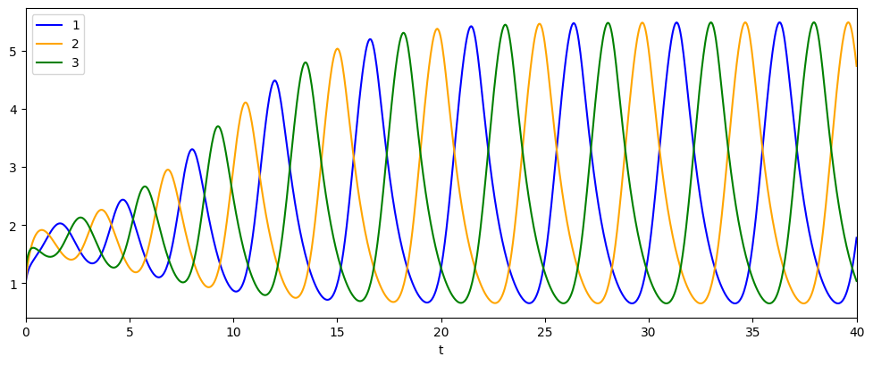
It is also instructive to plot the trajectory of the system as a projection in the \(x_2\)-\(x_1\) plane (or in either of the other two planes this three-dimensional system can be projected onto).
When the fixed point is stable, the trajectory in the \(x_2\)-\(x_1\) plane spirals into the fixed point. When it is unstable, the trajectory spirals away from it, eventually cycling around the fixed point to join a limit cycle.
# parameters
beta = 10
n = 3
t_max = 40
# Solve for species concentrations
t = np.linspace(0, t_max, n_points)
x = scipy.integrate.odeint(repressilator_rhs, x0, t, args=(beta, n))
x1, x2, x3 = x.transpose()
# Solve for fixed point
x_fp = fixed_point(beta, n)
plt.figure(figsize=figsize)
plt.xlabel("$x_1$")
plt.ylabel("$x_2$")
plt.plot(x1, x2)
plt.plot(x_fp, x_fp, marker="o", color="black")
plt.show()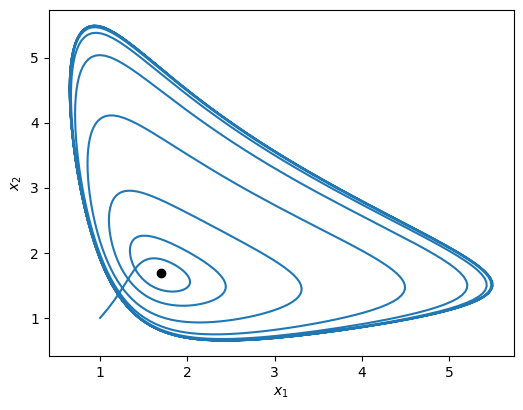
Finally, here is a simple three-dimensional plot of the limit cycle in the space of the three protein concentrations.
# Resolve problem for β = 20 and n = 3
t = np.linspace(0, 50, 1000)
x = scipy.integrate.odeint(repressilator_rhs, x0, t, args=(20, 3))
# Generate the plot
fig = plt.figure(figsize=figsize)
ax = fig.add_subplot(111, projection="3d")
ax.view_init(30, 30)
ax.plot(x[:, 0], x[:, 1], x[:, 2])
ax.set_xlabel("x₁")
ax.set_ylabel("x₂")
ax.set_zlabel("x₃");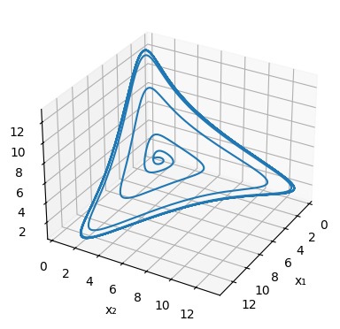
It is useful to make a linear stability diagram, which is a map of parameter space highlighting stable and unstable regions. We know the bifurcation line is
\[\begin{align} \beta = \frac{n}{2}\left(\frac{n}{2} - 1\right)^{-\frac{n+1}{n}} \end{align}\]
We can plot this line and delineate the regions of stability and instability. It clearly shows that, from a design point of view, it is desirable to make both \(n\) and \(\beta\) as high as possible.
# Get bifurcation line
n = np.linspace(2.01, 5, 200)
beta = n / 2 * (n / 2 - 1) ** (-(1 + 1 / n))
plt.figure(figsize=figsize)
plt.xlabel("n")
plt.ylabel("β")
plt.yscale("log")
plt.xlim(2, 5)
plt.ylim(1, 2000)
plt.plot(n, beta, linewidth=4, color="black")
plt.annotate("stable", (2.1, 2))
plt.annotate("unstable (limit cycle oscillations)", (2.5, 100))
plt.show()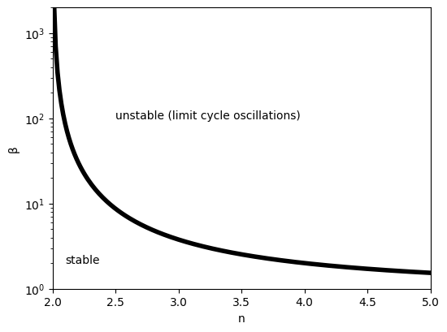
This analysis shows two conditions that favor oscillations:
In fact, these results can be understood intuitively: oscillations occur when the feedback “overshoots.” The sharper and stronger the response as one goes around the complete feedback loop, the longer and higher a pulse in one factor can grow before it is, inevitably, yanked back down by the feedback. Consistent with this view, there is a tradeoff between the length of the cycle (number of repressors in the loop) and the minimum Hill coefficient required Elowitz, PhD thesis, 1999.
It took a long time to design and then construct the repressilator. In addition to the molecular cloning, there were many steps to characterize the repressors and promoters and make sure signals could propagate through sequential repressor cascades.
After all of this, there was more than a little uncertainty as to whether the system would, indeed, exhibit self-sustaining oscillations.
In these movies, the changing fluorescence intensity in each cell provided a glimpse into the state of the oscillator over time:
This movie shows both clear oscillations in individual cells, as well as variability among cells in the amplitude, phase, and duration of each pulse. Analyzing these movies was done by manually tracking each cell backwards in time. This would now be done in a more automated fashion.
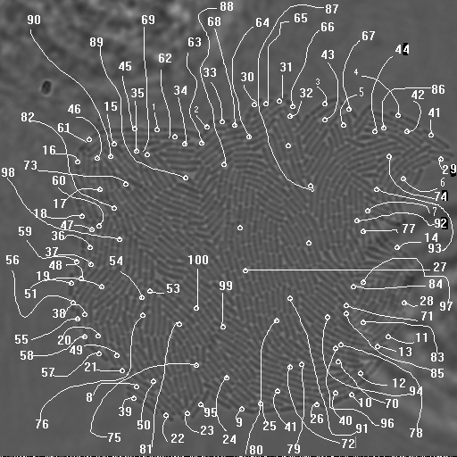
This procedure revealed clear oscillations in most cells, such as this:

Analysis of many cells showed a typical repressilator period of 160 ± 40 min (SD, n = 63), with a cell division time of ≈50-60 min at 30°C. Sibling cells desynchronized with one another over about two cell cycles (95 ± 10 min).
In Potvin-Trottier et al, Nature, 2016, Johan Paulsson and colleagues asked what accounted for the repressilator’s variability and whether it could be further improved. The following is based on Gao & Elowitz, Nature, 2016:
Observation method. Instead of growth on agarose pads, where waste products can build up and influence cell growth and behavior, they switched to a microfluidic device developed by Suckjoon Joon termed “the mother machine,” which allows continuous observation of single cells over hundreds of generations by trapping it at the end of a channel (for more info, see Suckjoon’s website). This revealed that, despite its variability, the original repressilator exhibited self-sustaining oscillations that never terminate.
Integration of reporter. Now able to analyze the dynamics in more constant conditions, they found that much of this variation could be attributed to the reporter plasmid itself. Integrating the reporter into the repressilator plasmid reduced this variability, as seen in the movie and traces below.


Here, with three colors to allow simultaneous observation of all three repressors, is one of the final repressilator designs as a movie and a typical trace.

In fact, this is so accurate that you can see it in a test tube.
Or you can see it in the “tree rings” of a bacterial colony.
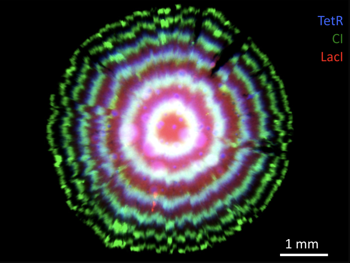
License & Attribution: This page is from material by Michael Elowitz and Justin Bois (© 2021–2025), licensed under CC BY-NC-SA 4.0, with minor modifications.